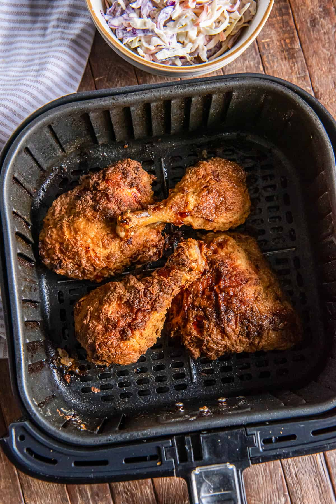

Air Fried Chicken

Description
A comfort classic without the grease. Takes a bit of work but it is well worth it
Ingredients
- 3 pounds bone-in chicken thighs and drumsticks
- 1 1/2 cups buttermilk
- 2 large eggs
- 2 cups all purpose flour
- 3 teaspoons paprika
- 2 teaspoons garlic powder
- 2 teaspoons onion powder
- 2 teaspoons salt
- 1 teaspoon black pepper
- Olive oil spray
Steps
- Preheat the air fryer to 360 degrees F.
- In a large shallow bowl, whisk together the buttermilk and eggs until well combined.
- In a second shallow bowl, add the flour, paprika, garlic powder, onion powder, salt, and pepper and whisk well.
- Using tongs or your hands, dip each piece of the chicken in the flour, shaking off any excess. Next, dip it in the buttermilk, then roll it in the flour, covering it completely. Set on a baking sheet and set aside. Repeat with the remaining chicken.
- Spray all sides of the chicken pieces with olive oil spray making sure to coat it entirely. Any missed parts will stay white when air fried.
- Place 4-5 pieces of chicken in the bottom of the air fryer basket, or as many that fit in your air fryer basket or oven in a single layer.
- Cook for 15-20 minutes. Carefully flip the chicken and cook for another 5-10 minutes until 165 degrees internally.